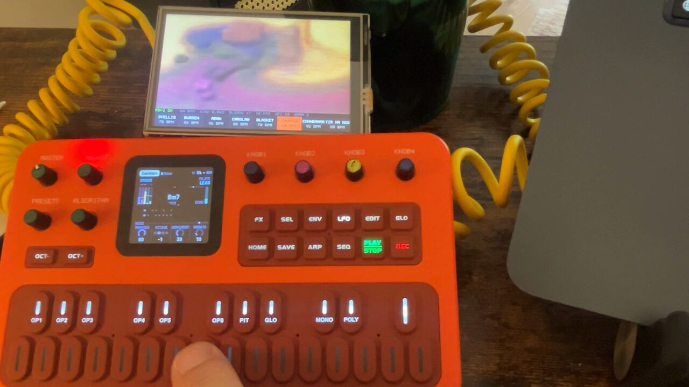
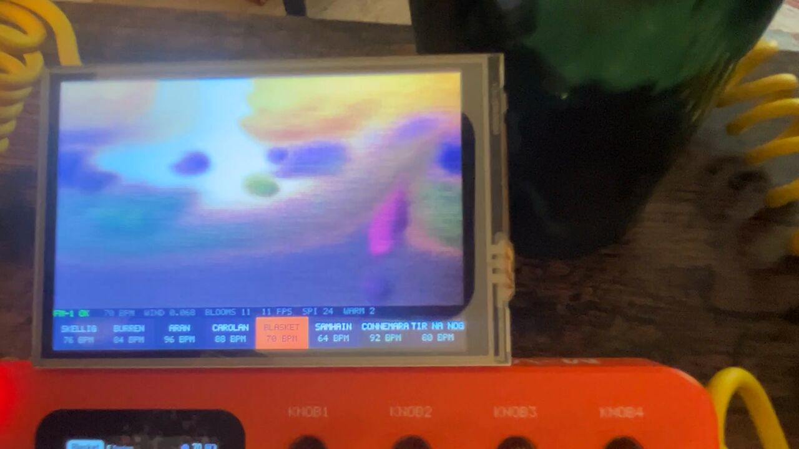
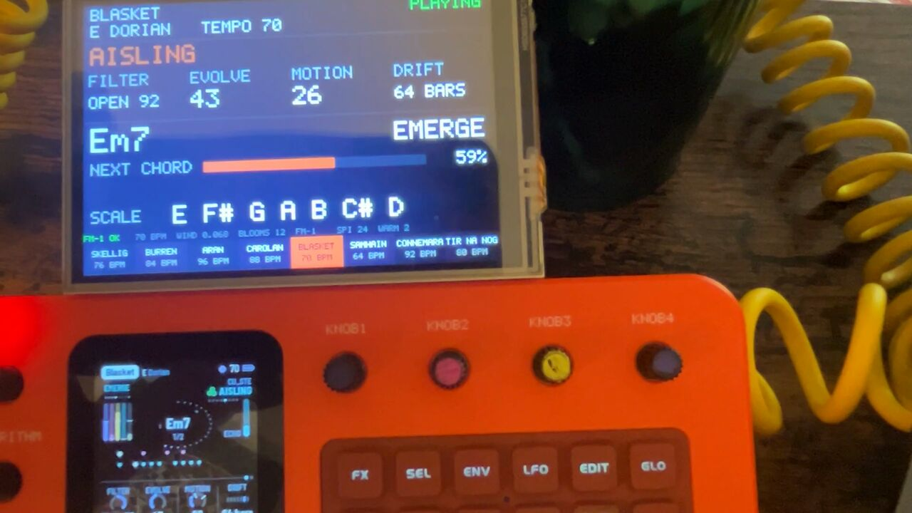
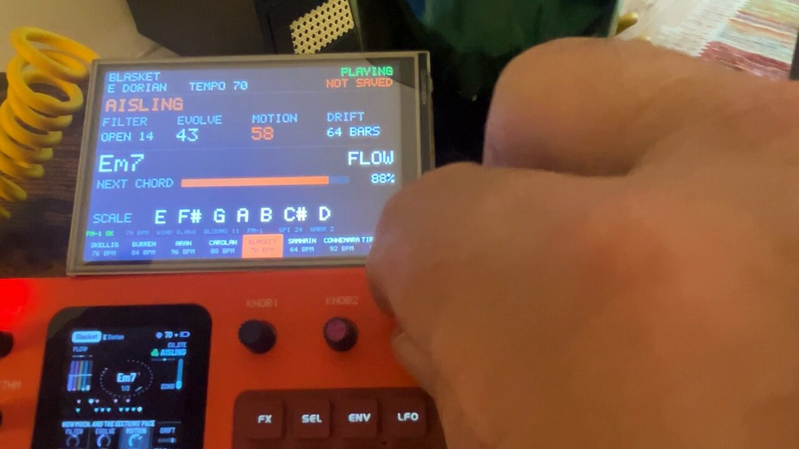
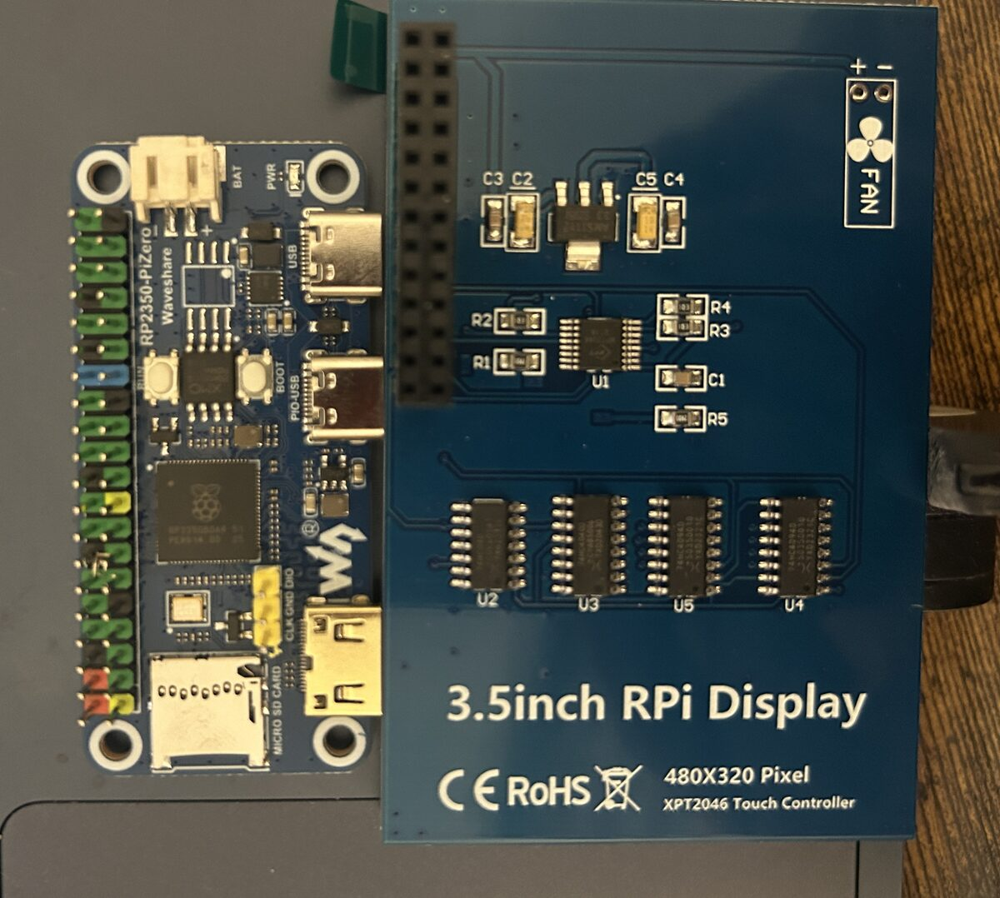
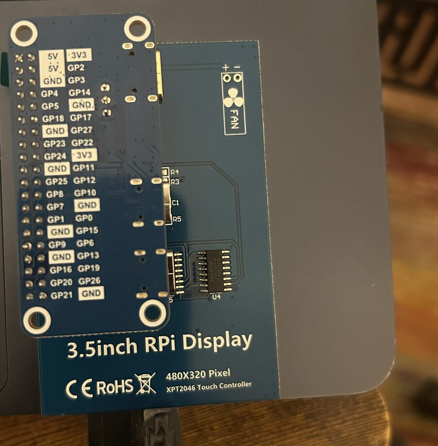

aisling · the add-on screen
a touch screen for the FM-1 · made and tried on one FM-1, on AISLING 1.2
A 3.5-inch touch screen that sits beside the FM-1 and gives it a second, bigger screen. It has two pages, a tap apart:
- The landscape. The visualiser's Irish landscape, painted from what the FM-1 plays: the flute the sky, the harps the hills and fields, the drone the bog. A strip of the eight pieces runs along the bottom; touch one and the FM-1 changes to it.
- The FM-1's own screen, bigger: the page, the four knobs and their values, as AISLING shows them. Drag a knob sideways and the FM-1's knob turns.
It's two cheap boards pushed together, with no computer in the loop: the FM-1 plugs into the box, and the box into a USB charger. Nothing changes on the FM-1 but one setting.
The box's own code isn't published yet, so for now this page is how mine was made, not a kit. The parts are the easy part.
What it looks like




What you need


| Part | What it does | Where |
|---|---|---|
| Waveshare RP2350-PiZero | The brains: a Raspberry Pi RP2350 chip on a board the shape of a Pi Zero, with two USB-C sockets. One of them can be a USB host, which is what lets the FM-1 plug straight into it. | adAmazon |
| ELEGOO 3.5" touch screen for Raspberry Pi | 480 × 320, SPI, with a resistive touch layer and a pen. Made for a Raspberry Pi's header, so it pushes straight onto the RP2350-PiZero's. | adAmazon |
| USB-C to USB-C data cable | From the box's PIO-USB socket to the FM-1. It must carry data, not just charge. | adAnker |
| Power: a USB cable and a supply | Into the box's other socket, marked USB. Any USB charger or power bank, or a computer. The box powers the FM-1 too. A power bank needs to be one that stays on at a small load. | adA to C cable adpower bank |
| An FM-1 on AISLING 1.2 | Free. 1.2 for the knobs, 1.1 or later for the strip of pieces. | install |
No soldering on mine: the board came with its header fitted and the screen pushes onto it. If yours comes without a header, it needs one soldered on first. Something to prop it up behind the FM-1 helps.
How it was done
- The FM-1 is a USB MIDI device, and AISLING sends everything it plays out of its USB socket: the drone, the harps and the flute on channels 1 to 4, and the clock. The RP2350 runs as a USB host on its second socket (in software, with Pico-PIO-USB), so the FM-1 plugs into it as it would into a computer.
- The landscape is a cut-down version of the visualiser's, rewritten in C for a 480 × 320 screen. Each note lays colour into its layer and the clock sets the pace. It draws about ten frames a second over SPI.
- The FM-1's page comes from what AISLING says to a screen reader: every time its screen changes, it sends the page and its values as text over MIDI (the FM-1 Screen Reader protocol, by Charles Vestal). The box reads that text and draws the page.
- The knobs use something AISLING 1.2 already listens for: MIDI CC 16 to 19 turn the four knobs of whatever page is on its screen. The box knows each knob's values in order, so a drag steps through them from where the knob is and never jumps. If the FM-1 doesn't say the knob back, the box says so in red.
- The strip of pieces sends a program change, 0 to 7, back to the FM-1.
It's all new code, on the Raspberry Pi Pico SDK with TinyUSB, under the GPL like AISLING. The screen's settings were written from the panel chip's datasheet and tuned by eye on a calibration screen. It was built up in seven test builds, from "does the screen light up" to the knobs, tried on the board as it went.
Putting it together
- Push the screen onto the board's header, so its socket covers pins 1 to 26 and the screen lies over the board.
- Plug the FM-1 into the socket marked PIO-USB, with a data cable.
- Plug power into the socket marked USB.
- On the FM-1, in AISLING's Setup page, turn MIDI out on.
- Play. Tap the screen to switch between the landscape and the FM-1's page. Holding a finger on it for two seconds brings up the calibration screen.
Never power both of the board's sockets from two sources at once: they share one power line, which also feeds the FM-1.
The screen covers the board's BOOT button, so the first time code goes on, the screen comes off. After that, new builds load over USB with the screen in place.
Questions
Will it work with any FM-1 firmware, or only ones based on DUB-1?
The landscape works with anything that sends notes over USB MIDI, not only DUB-1 and its family. The box takes any USB MIDI device and paints each note by its channel: channels 1, 5, 9 and 13 are the bog, 2, 6, 10 and 14 the fields, 3, 7, 11 and 15 the sky, and 4, 8, 12 and 16 the hills. Another firmware's parts land wherever their channels put them, so DUB-1's drums (channel 10) would paint fields, and its bass (channel 3) the sky. It paints, but the picture means less than it does for AISLING.
The FM-1's page, the knobs and the strip of pieces are AISLING's only. DUB-1 and its relatives speak the same screen-reader protocol, but with their own words for their own pages, and the box only knows AISLING's. I've only tried it with AISLING.
What about the FM-1's stock firmware?
Untried. If it sends its notes over USB MIDI, the landscape should paint from them; the rest won't work.
Which AISLING do I need?
1.2. The knobs need it, the strip of pieces needs 1.1 or later, and the FM-1's page was made to 1.2's words. Earlier versions are untried.
Can I get the code?
Not yet. It isn't published. When it is, it'll be linked here, under the same licence as AISLING.
Does turning a knob on the screen save it?
No. It's the same as turning the knob on the FM-1: NOT SAVED shows, and you save on the FM-1 as usual. Nothing is stored on the box.
Can every knob be turned from the screen?
Nearly. Setup's four can't (AISLING doesn't take them over MIDI), so their labels show dimmed, and nor can Mode while it says Custom. With the grid up, AISLING ignores the knobs, and the box says the FM-1 didn't take it.
Why are the colours paler than on a computer?
It's a cheap panel, and it squashes its brightest colours together, so the visualiser's vellum shows white. The box sets the panel's tone curve every time it starts, which helps the middle and dark colours. It still looks good.
Do I need a Raspberry Pi?
No. The RP2350 is the chip from the Raspberry Pi Pico 2 and does the whole job on its own; the screen just happens to be made for a Pi's header.
Does it work with the visualiser on a computer?
They're separate: the box is for when the FM-1 is on its own. The visualiser in Chrome or Edge still paints the full landscape from an FM-1 plugged into the computer.
Links marked ad are affiliate links: if you buy through one, I may earn a small commission, at no cost to you. As an Amazon Associate I earn from qualifying purchases. "Tried" means tried by me, on one FM-1 running AISLING, not a promise from any maker. The screen-reader protocol is Charles Vestal's (fm1-reader). M-VAVE and FM-1 are trademarks of their owners, as are Waveshare, ELEGOO and Raspberry Pi. AISLING is not affiliated with any of them.